یه قدم برای روزهای بهتر
توجیبی؛ تقویم و برنامهریزی روزانه، یکجا.
از برنامههای روزانه تا عادتهایی که میخوای بسازی؛ توجیبی کمکت میکنه روزهات رو به سبک خودت پیش ببری.
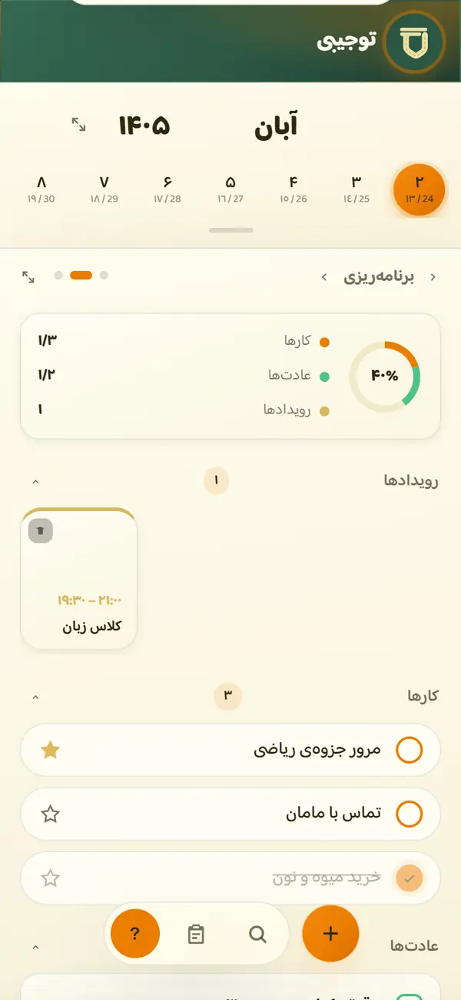
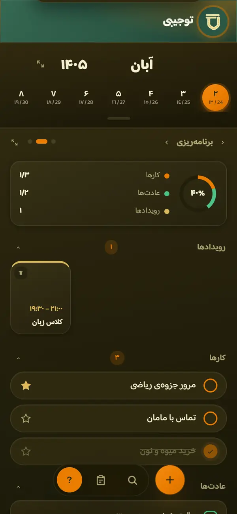
هر بخش توجیبی، یه میز کار
بالای صفحه تقویمته و پایینش میزهای کار؛ هر میز یه کار رو انجام میده و با یه کشیدن بینشون جابهجا میشی.
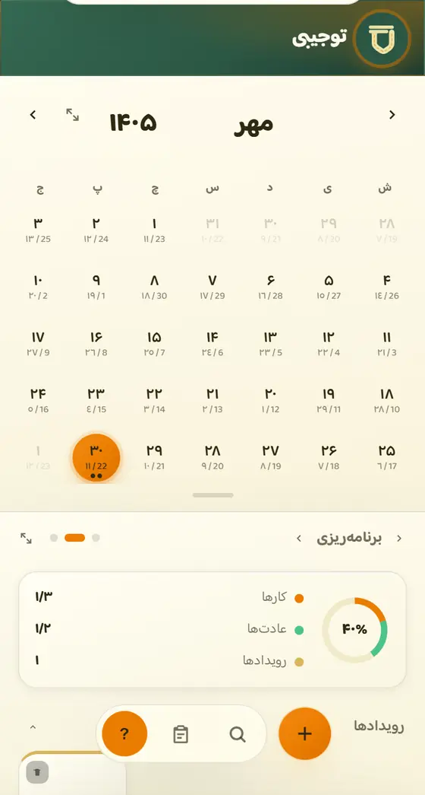
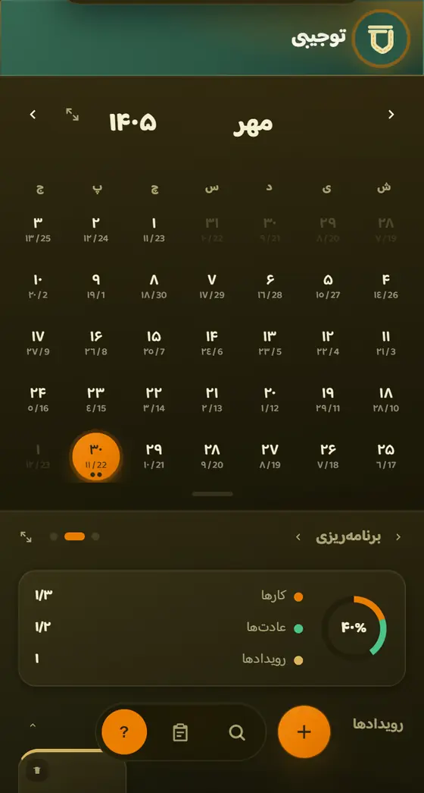
تقویم
سه تقویم، کنار هم
تاریخ شمسی، قمری و میلادی هر روز رو با هم میبینی و تعطیلیها رنگی مشخص شدن.
- روی هر روز بزن تا برنامه و مناسبتهاش رو ببینی
- نقطههای زیر هر روز یعنی اون روز برنامه داری
- با کشیدن بین ماهها جابهجا شو و با یه دکمه برگرد به امروز
تقویم امسال رو ببین
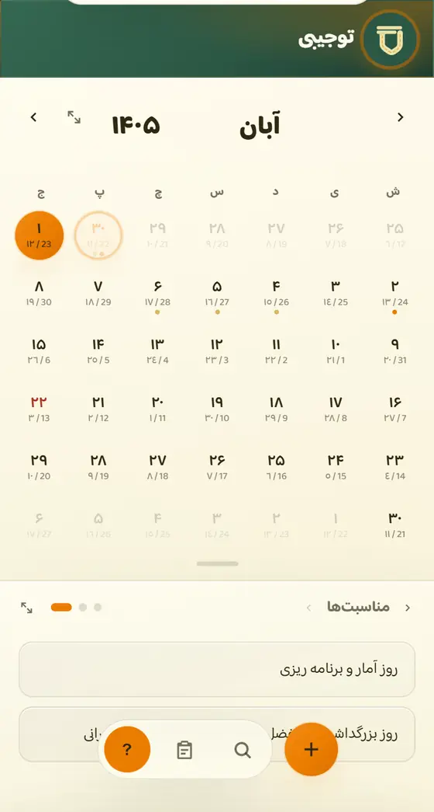
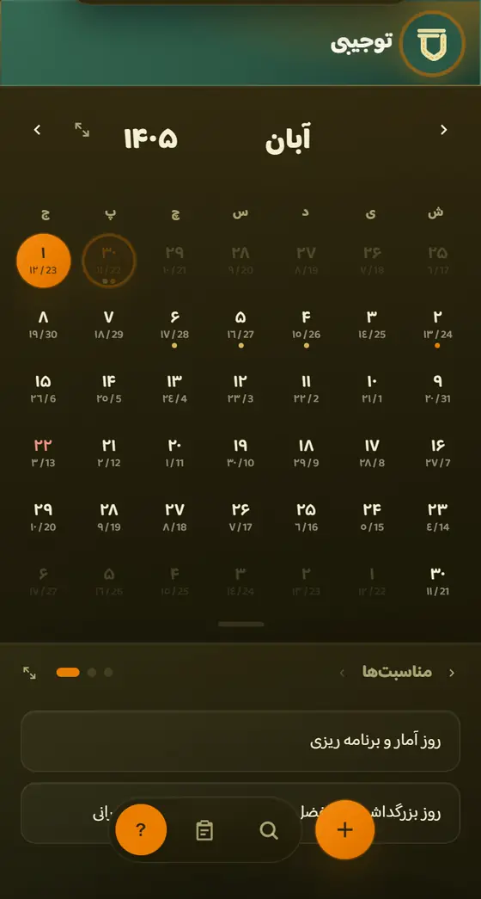
میز مناسبتها
هر روز چه مناسبتی داره؟
مناسبتها و تعطیلیهای رسمی هر روزی که توی تقویم انتخاب کنی، همینجا جلوی چشمته.
- مناسبتهای شمسی، قمری و میلادی یکجا
- تعطیلیها از روزهای عادی جدا شدن
- با جستوجو هر مناسبتی رو با اسمش پیدا کن
مناسبتها رو ببین
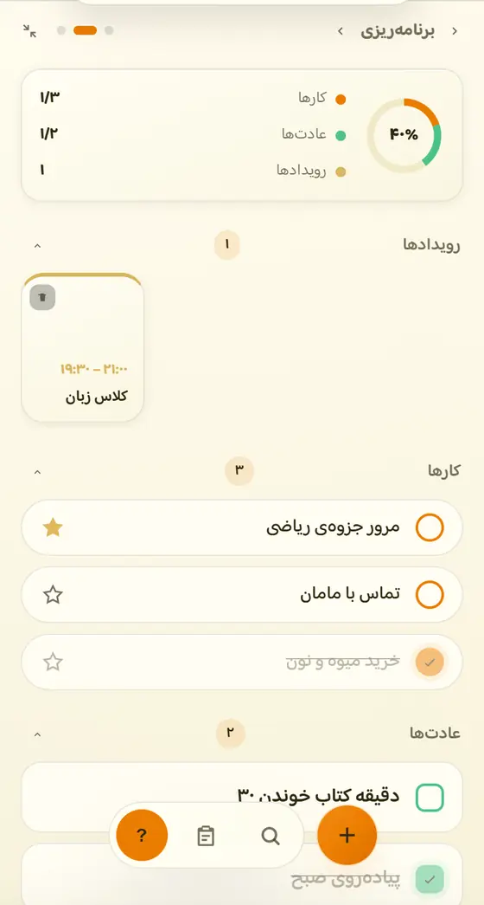
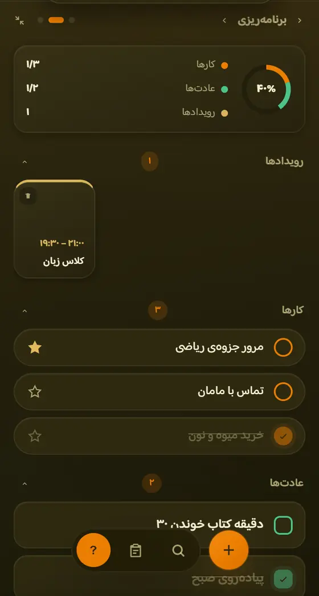
میز برنامهریزی
کارها، عادتها و رویدادهات
هر چیزی که برای یه روز داری، از کار و عادت تا قرار و رویداد، توی یه فهرست مرتب.
- تیک بزن تا انجامشده بشه؛ کارت رو بکش برای کارهای سریع
- عادتها و رویدادهای تکرارشونده، روزانه، هفتگی یا ماهانه
- یادآور بذار تا سر وقت خبرت کنه
برنامهریزی کن
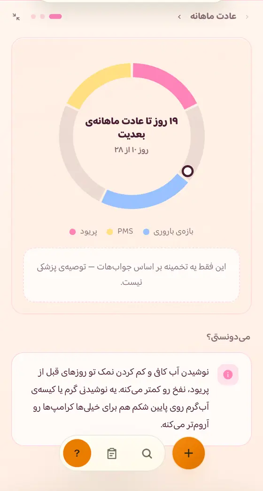
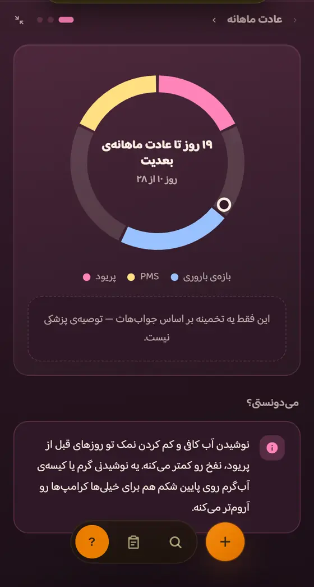
میز پریود
چرخهات رو بشناس
یه حلقه نشون میده الان کجای چرخهای و روزهای بعد چی در انتظارته.
- با چند سؤال کوتاه راه میافته
- اگه بخوای، روزهای پیشبینیشده توی تقویم هم دیده میشن
- میتونی با حداکثر ۳ دوست به اشتراکش بذاری
میز پریود
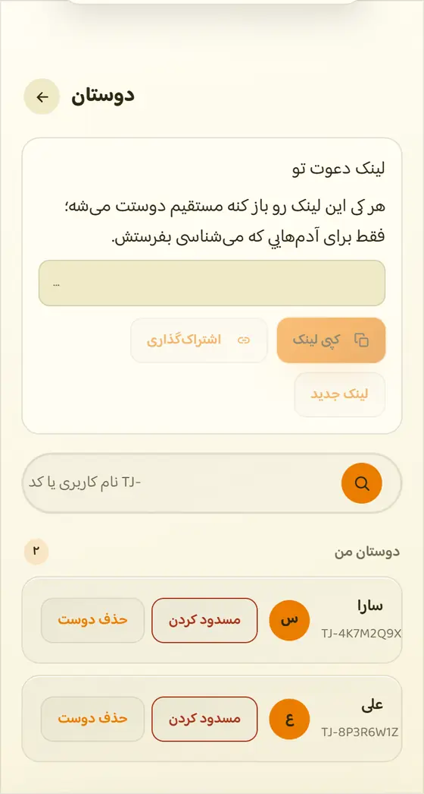
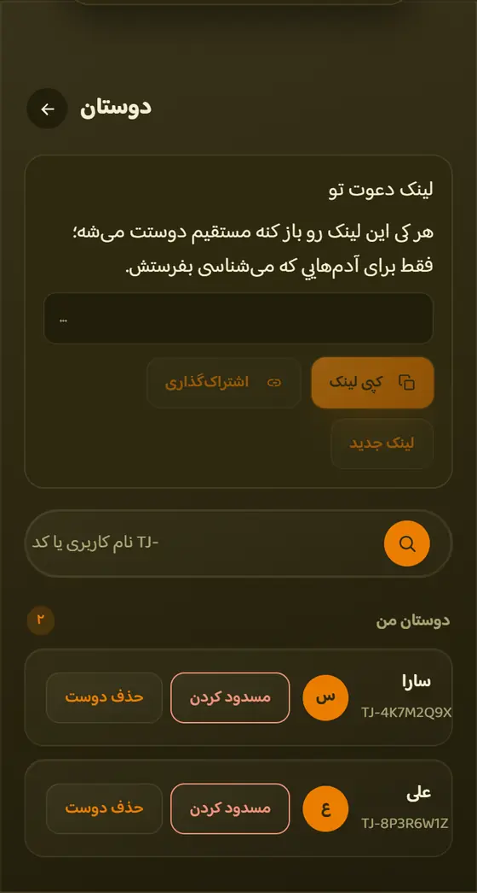
دوستان
دوستات هم باشن
دوستهات رو اضافه کن تا هرچی خواستی، مثل چرخهی پریود، رو باهاشون به اشتراک بذاری.
- لینک دعوت بفرست؛ هرکی بازش کنه دوستت میشه
- با نام کاربری یا کد TJ- دوستت رو پیدا کن
دوستام
توجیبی چیه؟
تقویم؛ برای روزهای پیش رو
روزها، تاریخها و مناسبتهات رو دنبال کن و همیشه دید بهتری نسبت به زمانت داشته باش.
تقویم رو ببین
برنامههات رو مرتب کن
کارهات رو بنویس، برای روزهات برنامه بچین و قدمبهقدم پیش برو.
برنامهریزی کن
عادتهای کوچیک، تغییرهای بزرگ
عادتهایی که برات مهمن ثبت کن و مسیر پیشرفتت رو دنبال کن.
عادتهام
همهچیز از همین امروز شروع میشه.
لازم نیست همهچیز رو یکجا تغییر بدی. از تقویمت شروع کن، کارهات رو ثبت کن و کمکم روال روزانهای بساز که بهت میاد.
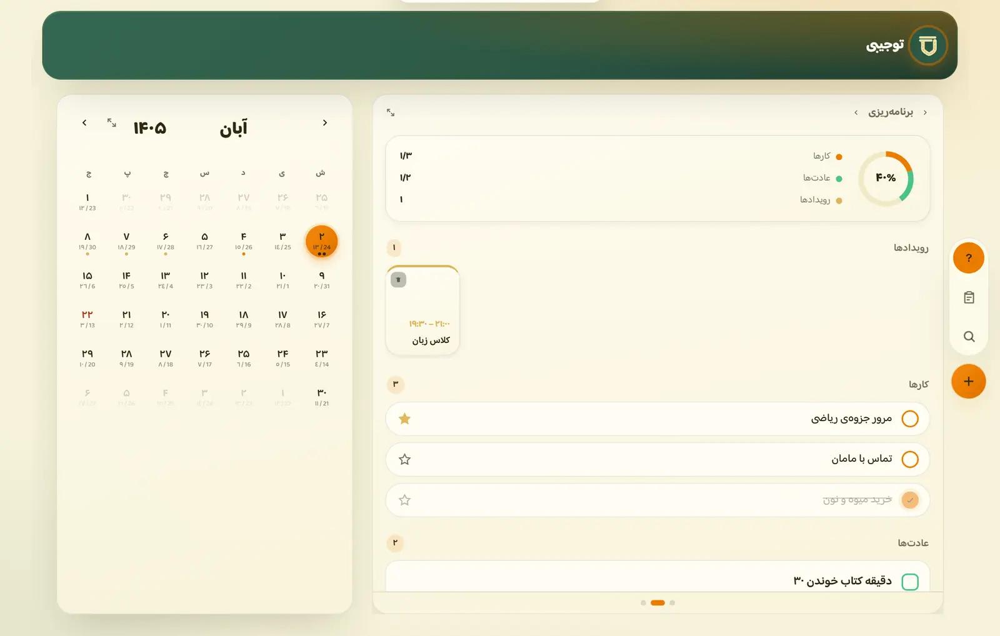
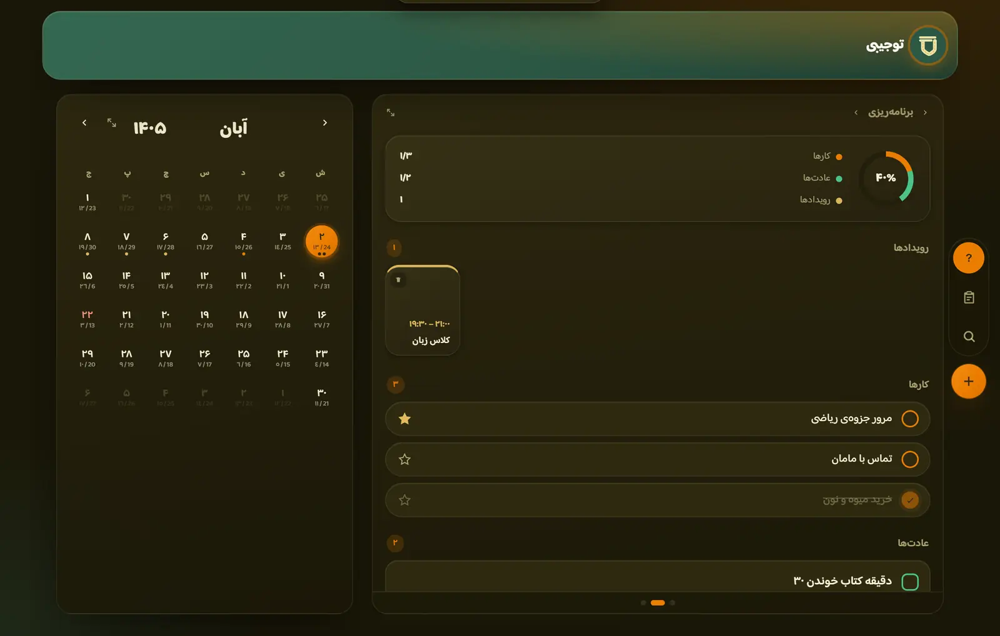
روزت رو با توجیبی شروع کن.
یه جای ساده برای برنامههات، کارهات و چیزهایی که برات مهمن.